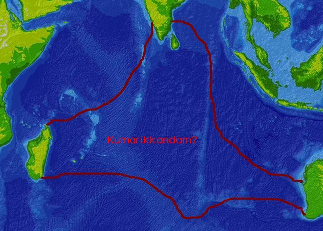
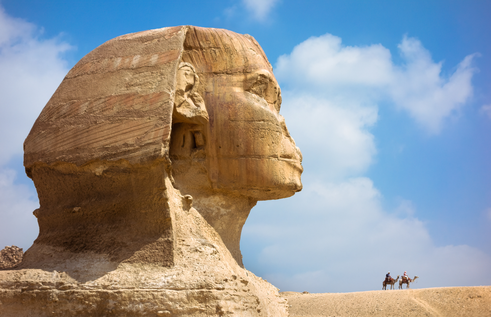

火星男孩（波力斯卡）
共 61 幕分鏡 · 預估成片總長度：11分44秒 (704.0s) · 自動生成於 20261016_marsboy
🎞️ 各場景分鏡與語音審查
001_shot_1 · 大家好我是白兔
時長: 11.25s

002_shot_2 · 如果這件事發生在今天
時長: 12.81s

003_shot_3 · 時間回到2003年的秋天
時長: 7.12s

004_shot_4 · 當時的俄羅斯剛經歷完蘇聯解體的休
時長: 11.77s

005_shot_5 · 在這種精神真空的大環境下
時長: 6.6s

006_shot_6 · 那天晚上幾位研究神秘學的學者與露
時長: 11.57s

007_shot_7 · 他叫波力斯卡
時長: 12.28s

008_shot_8 · 從火星遠古時代的大氣成分
時長: 11.0s

009_shot_9 · 在場那些受過高等教育的知識分子聽
時長: 11.97s

010_shot_10 · 如果這只是一場荒野裡的童言無忌
時長: 11.62s

011_shot_11 · 波力斯卡的母親娜傑日達是一名公立
時長: 15.66s

012_shot_12 · 她對外界宣稱兒子出生僅僅十五天就
時長: 12.17s

013_shot_13 · 到了兩歲這孩子甚至無師自通地拿著
時長: 18.02s

014_shot_14 · 2004年3月
時長: 13.12s

015_shot_15 · 西方各大主流通訊社爭相轉載
時長: 6.8s

016_shot_16 · 為了坐實這個奇蹟
時長: 15.78s

017_shot_17 · 這條由望子成龍的家庭
時長: 7.56s

018_shot_18 · 那麼
時長: 5.9s

019_shot_19 · 按照波力斯卡的說法
時長: 12.78s

020_shot_20 · 最終火星各個派系爆發了席捲全球的
時長: 10.41s

021_shot_21 · 整個星球表面瞬間淪為毫無生機的赤
時長: 8.97s

022_shot_22 · 講到這裡
時長: 14.02s

023_shot_23 · 在火星人的眼中
時長: 12.01s

024_shot_24 · 他宣稱自己轉世降生到地球之後
時長: 6.6s

025_shot_25 · 更讓人難以置信的是
時長: 11.17s

026_shot_26 · 外層是佔比百分之二十五的耐高溫合
時長: 12.58s

027_shot_27 · 整套說辭邏輯嚴密自洽
時長: 6.2s

028_shot_28 · 然而波力斯卡的故事並沒有在紅色星
時長: 7.77s

029_shot_29 · 他面對採訪鏡頭時經常深情款款地提
🖼️ 畫中畫 PiP
時長: 7.36s
無畫面
疊加參考圖 (PiP)：

030_shot_30 · 波力斯卡宣稱自己當年曾作為火星的
時長: 13.18s

031_shot_31 · 在一次講述過程中
時長: 14.13s

032_shot_32 · 他眼睜睜看著自己最親密的地球摯友
時長: 14.57s

033_shot_33 · 在場的大多數記者與超自然研究者都
時長: 14.55s

034_shot_34 · 利莫里亞假說最早不過是十九世紀英
時長: 18.34s

035_shot_35 · 這個神話之所以在世紀之交盛行
🖼️ 畫中畫 PiP
時長: 8.16s

疊加參考圖 (PiP)：
036_shot_36 · 只要稍微翻查一下就會發現
時長: 7.56s

037_shot_37 · 一個記憶力超群的兒童
時長: 14.66s

038_shot_38 · 到了2007年
時長: 7.12s

039_shot_39 · 著名的獨立調查機構卡米洛特工程派
時長: 8.97s

040_shot_40 · 此時十一歲的波力斯卡已經不再是那
時長: 8.77s

041_shot_41 · 在聚光燈與西方調查員誘導性的提問
時長: 9.17s

042_shot_42 · 他指著埃及吉薩金字塔的照片聲稱
🖼️ 畫中畫 PiP
時長: 16.75s
無畫面
疊加參考圖 (PiP)：

043_shot_43 · 這番充滿傳奇色彩的言論隨後引發了
時長: 12.77s

044_shot_44 · 男孩也犯下了所有預言家最致命的錯
時長: 13.73s

045_shot_45 · 而2012年更是整個人類文明走向
時長: 6.72s

046_shot_46 · 在場的西方信徒們聽得如痴如醉
時長: 8.81s

047_shot_47 · 歷史的指針從來不會因為一個少年的
時長: 7.16s

048_shot_48 · 2008年平靜地過去了
時長: 10.77s

049_shot_49 · 沒有全球性的大水災
時長: 14.62s

050_shot_50 · 隨著預言的一個個徹底破產
時長: 9.48s

051_shot_51 · 但造神運動所帶來的虛妄虛榮與經濟
時長: 6.97s

052_shot_52 · 失去了頭條新聞的熱度之後
時長: 15.69s

053_shot_53 · 然而進入青春期的波力斯卡開始出現
時長: 9.17s

054_shot_54 · 神童濾鏡徹底破碎之後的代價是極度
時長: 12.78s

055_shot_55 · 俄羅斯獨立媒體後續的追蹤報導更揭
時長: 12.78s

056_shot_56 · 昔日那個在篝火前指點宇宙軌道的星
時長: 9.89s

057_shot_57 · 時至今日
時長: 15.02s

058_shot_58 · 每天清晨他需要像千千萬萬個普通俄
時長: 8.57s

059_shot_59 · 回過頭來看這場持續了二十年的異星
時長: 16.42s

060_shot_60 · 大人們寧願將希望寄託在一個孩子荒
時長: 14.41s

061_shot_61 · 宇宙的深處或許真的存在著我們尚未
時長: 29.48s